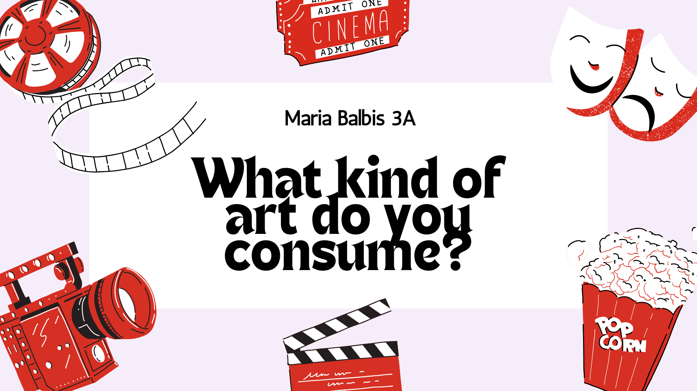

Linguagens - 1º Trimestre
Biografia Profissional
Essa atividade foi muito interessante, pois me permitiu explorar minha criatividade ao criar uma biografia profissional, e também, vou conseguir reutilizar essa biografia para portfólios, linkedin e entre outros.
Habilidades: H22
Revista Literária

Criar a nossa revista "Alma da Literatura" foi um desafio muito interessante e enriquecedor. As tarefas realizadas para compor o conteúdo da revista estimularam nossa criatividade e nos envolveram profundamente no tema. Além disso, essa experiência nos ajudou a desenvolver habilidades de escrita, design e trabalho em equipe.
Habilidades: H4, H14, H17
Site Informa Enem

O site "Informa Enem" foi uma atividade colaborativa desenvolvida com meus colegas para ajudar outros estudantes a se prepararem para o Enem. Durante o desenvolvimento, fiquei responsável pela aba de "Cinema". Essa experiência nos permitiu aprimorar habilidades de trabalho em equipe, pesquisa e design.
Habilidades: H23
Comentários UFSC

Essa atividade me incentivou a desenvolver um olhar crítico sobre as obras literárias que li, como "Parque industrial" e "Memórias Póstumas de Brás Cubas". Melhorou minha capacidade de análise e expressão escrita.
Habilidades: H17
Nota da redação

Essa redação que eu realizei foi um teste para explorar a nova plataforma de redação, e percebi que há muito espaço para melhorar. Foi uma experiência que me ajudou a identificar pontos de evolução, como organização das ideias e argumentos.
Habilidades: H6, H8
Reconto Pai contra mãe

Essa atividade foi muito desafiadora, pois me permitiu reescrever o conto "Pai contra Mãe" do ponto de vista da mãe. Explorei sentimentos e motivações dessa personagem, desenvolvendo escrita, empatia e interpretação.
Habilidades: H4, H14
Linguagens - 2º Trimestre
Revista literária pt2
Estamos super ansiosos para atualizar a Alma da Literatura, mas ela já está incrível! O conteúdo, inspirado em discussões como a de O Outro Lado da Bola, brilha, e com pequenos ajustes no design e na comunicação da equipe, a próxima edição será ainda mais especial.
Habilidades: H4, H14
Tipo de arte que você consome
Esse trabalho foi uma experiência bem legal porque me fez refletir sobre os artistas e obras que eu realmente gosto. Escolhi falar sobre o Justin Bieber e sobre a série Modern Family, e percebi que ambos fizeram parte de diferentes fases da minha vida. Enquanto pesquisava e escrevia em inglês, consegui praticar o uso do Simple Past e melhorar minha forma de me expressar no idioma.
Habilidades: H11, H25
Redação Online

Nessa redação alcancei 600 pontos. Foi um resultado importante, mas percebo que ainda tenho muito a melhorar. Essa redação me mostrou onde estão minhas dificuldades e me motiva a continuar praticando para evoluir cada vez mais.
Habilidades: Não especificadas.
Linguagens - 3º Trimestre
Maior Nota dos simulados Redação

Na minha redação, alcancei a nota 800, um resultado que me deixou muito satisfeita. Mesmo assim, percebo que ainda posso melhorar a organização das ideias e aprofundar meus argumentos. Essa avaliação me motivou a continuar praticando para buscar uma escrita cada vez mais clara, crítica e bem estruturada.
Habilidades: Habilidade: H12 - Empregar recursos linguísticos para identificar e apresentar pontos de vista.; Habilidade: H15 - Produzir trabalhos individuais e coletivos, explorando materiais e técnicas ligados ao universo das composições artísticas e de práticas corporais.; Habilidade: H16 - Relacionar práticas corporais e artísticas à própria vida, ao convívio social e à formação de identidades.; Habilidade: H4 - Reconhecer a pluralidade de manifestações artísticas e culturais como forma de integração entre pessoas e entre diferentes grupos sociais e étnicos.
Carta de intenção

Nesta atividade, escrevi uma Carta de Intenção para o curso de Ciência de Dados da UFSC, refletindo sobre minhas motivações e interesses na área. Foi um exercício importante para organizar meus objetivos e praticar a escrita formal usada em processos seletivos.
Habilidades: Habilidade: H12 - Empregar recursos linguísticos para identificar e apresentar pontos de vista.; Habilidade: H15 - Produzir trabalhos individuais e coletivos, explorando materiais e técnicas ligados ao universo das composições artísticas e de práticas corporais.; Habilidade: H16 - Relacionar práticas corporais e artísticas à própria vida, ao convívio social e à formação de identidades.; Habilidade: H4 - Reconhecer a pluralidade de manifestações artísticas e culturais como forma de integração entre pessoas e entre diferentes grupos sociais e étnicos.
Reels Literário

Para esta atividade, eu e meu grupo produzimos um reel literário sobre o Palácio Cruz e Sousa, um dos locais mencionados na obra Primeiro de abril: narrativas da cadeia. Mesmo sem irmos até o lugar, utilizamos um fundo de referência e relacionamos o espaço à narrativa de Salim Miguel, destacando sua importância histórica durante a ditadura militar. A atividade foi interessante porque uniu literatura, memória e representação visual, ajudando a entender como a cidade também faz parte das histórias de resistência.
Habilidades: Habilidade: H12 - Empregar recursos linguísticos para identificar e apresentar pontos de vista.; Habilidade: H15 - Produzir trabalhos individuais e coletivos, explorando materiais e técnicas ligados ao universo das composições artísticas e de práticas corporais.; Habilidade: H16 - Relacionar práticas corporais e artísticas à própria vida, ao convívio social e à formação de identidades.; Habilidade: H4 - Reconhecer a pluralidade de manifestações artísticas e culturais como forma de integração entre pessoas e entre diferentes grupos sociais e étnicos.